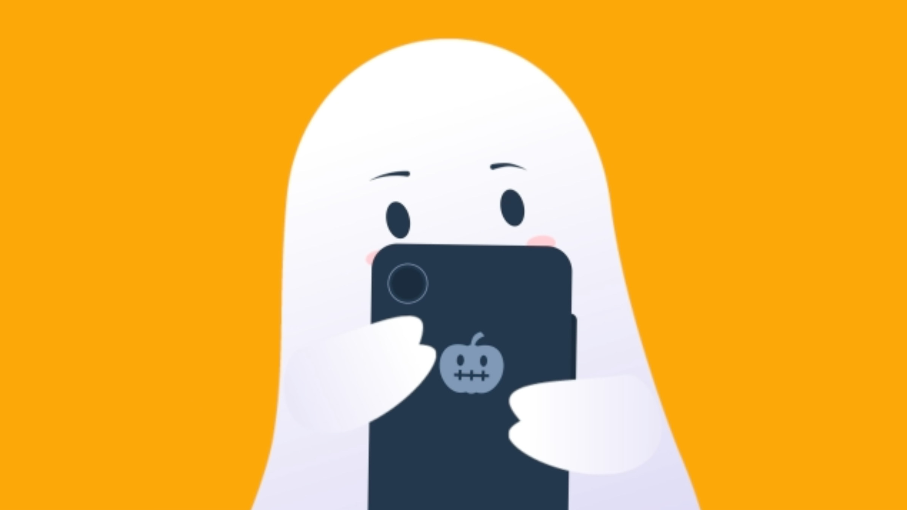
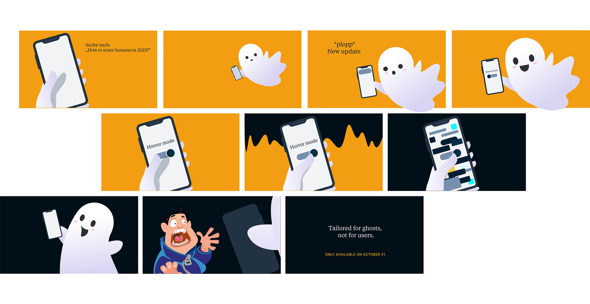

A Halloween motion piece for Akkodis's UX team, using illustration and animation to send a creative greeting to clients while highlighting the value of good UX.

Every year, brands flood social media with the same Halloween aesthetics. Akkodis's UX team wanted something different: a post that stands out but also carries a message about the value of good UX. The challenge was finding an angle authentic to a tech consultancy, not just seasonal decoration.

User-centered design means designing for every user, including ghosts. The concept: a ghost wants to scare people on Halloween, so we designed exactly that for him. The Horror Mode, a feature built entirely around the ghost's needs, became the creative hook. I illustrated and animated the piece as a short video, deliberately playful and ironic, optimised for LinkedIn auto-play without sound.
The Horror Mode landed exactly as intended: playful, in-character, and with a point. The animation consistently made people smile and generated strong positive feedback. Beneath the irony, the message was clear: at Akkodis, user-centered design applies to everyone.

HMI for Driving Simulation

Voteasy Votecounter

Langenscheidt Language Coach